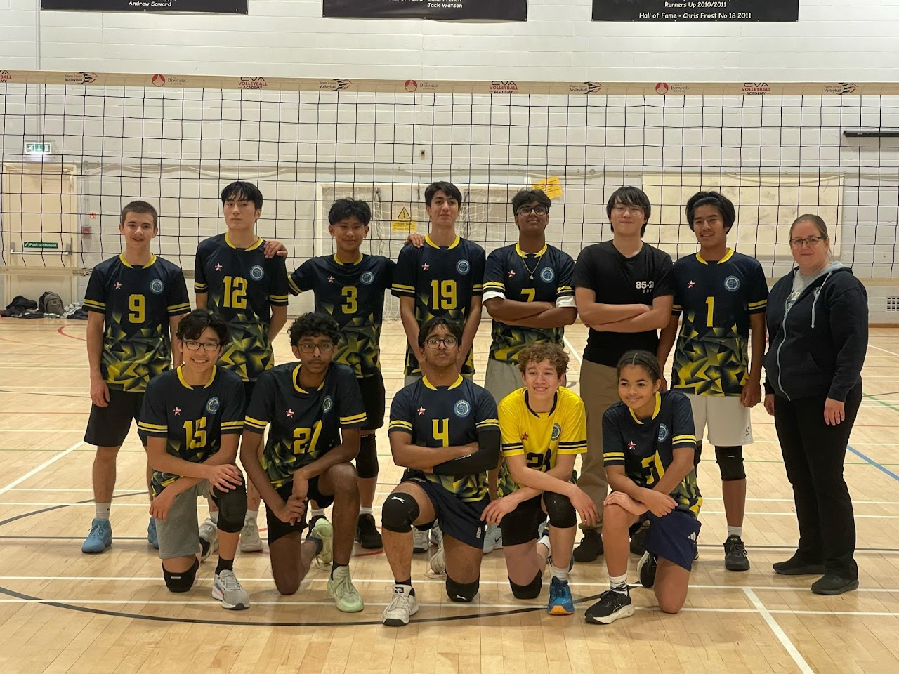
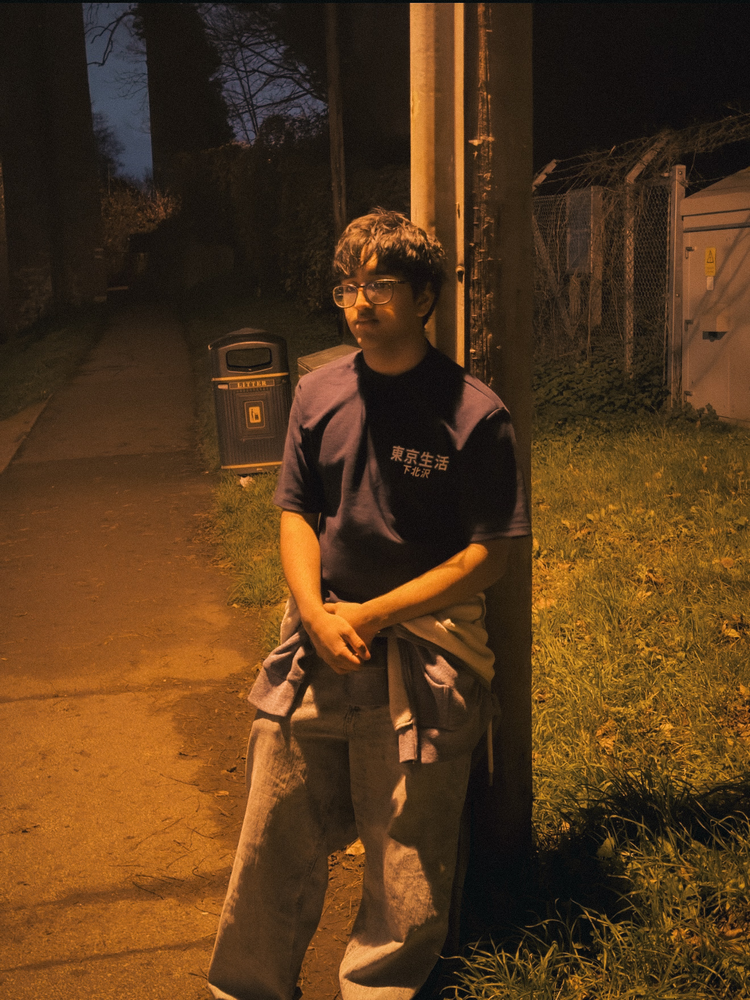
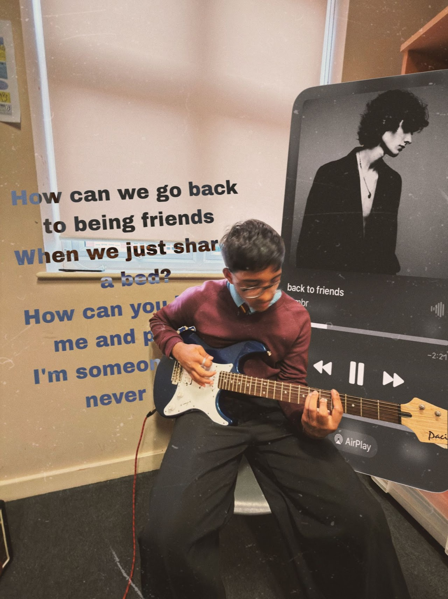
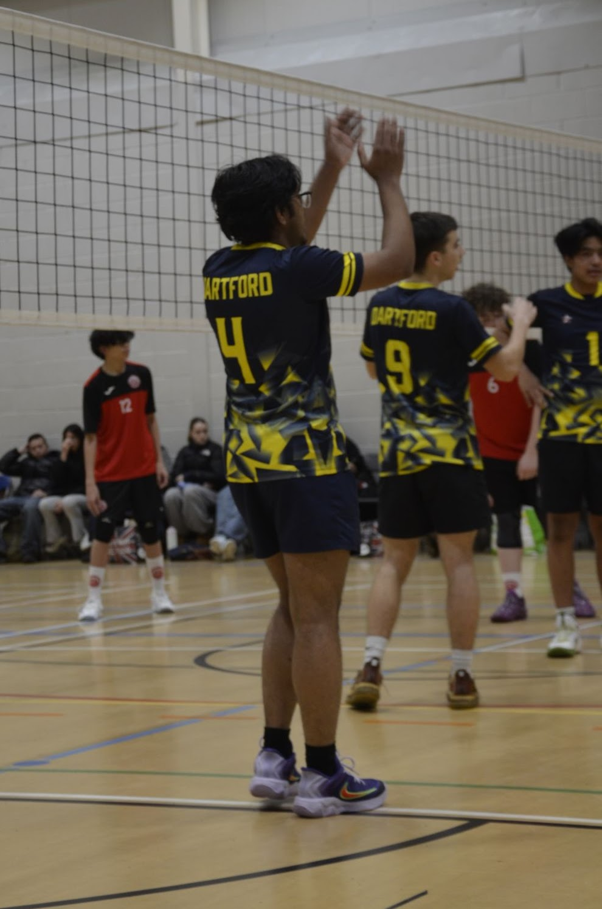

ABOUT ME
SATWAT RASIF

WHO AM I?
Hi, I'm Satwat Rasif — a photographer with a passion for capturing moments that tell a story.
Photography, for me, is more than a hobby; it's how I see the world. I'm drawn to the way a single frame can freeze a feeling, a place, or a person in time, and I'm always looking for that perfect shot. I've been doing photography for just over 4 years, taking on knowledge from my father who is also a professional photographer and videographer.
Outside of photography, I'm a musician — I play guitar and sing, and I think that love of creativity bleeds naturally into my work behind the lens. I'm also a keen volleyball player for Dartford VC 2025/26 and Dartford Grammar 2024/25 and 2025/26 as well as being a Sea Cadet for just over 5 years, so I thrive in environments that demand focus, teamwork, and discipline. Additionally, I used to play many sports such as Rugby, Cricket and Football, which means I'm able to grab the shots needed in fast-paced games.



4+
YEARS EXPERIENCE
5+
YEARS SEA CADETS
∞
PASSION FOR PHOTOGRAPHY